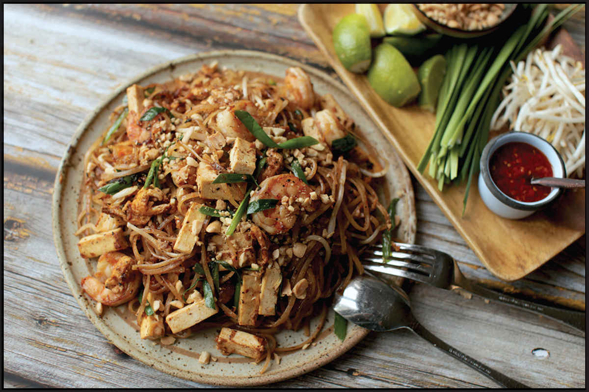
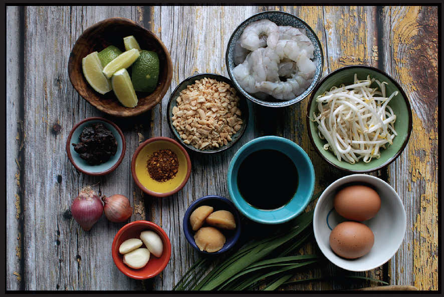
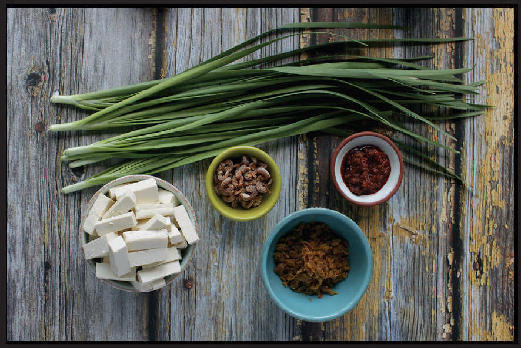
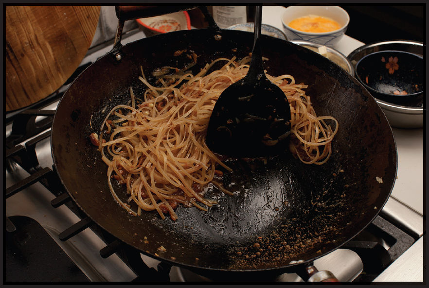

PAD SEE EW WITH CHICKEN
|
Yield Serves 4 |
Active Time 15 minutes Total Time 30 minutes |
For best results, use freshly made hor fun noodles either from a local shop or homemade (see here). If using refrigerated fresh hor fun noodles or dry noodles, you will need to boil them before use: Bring 3 quarts of water to a boil in your wok. Add the noodles and cook, stirring gently to break them up, until they are tender, about 1 minute (if using dry noodles, this will take a couple minutes; follow the package directions). Drain, toss with a couple teaspoons of oil to keep them separated, then spread out on a large plate or rimmed baking sheet. Allow to air-dry for at least 5 minutes.

Pad see ew, which translates from Thai as “fried soy sauce,” is one of several rice noodle stir-fries that derive from Cantonese chow fun. The process for making it is largely the same; the only real difference lies in the ingredients. In place of alliums, pad see ew includes Chinese broccoli, which I blanch briefly to set its color before stir-frying (broccolini or Western broccoli will do in a pinch). Beef can be used, but chicken, along with a fried egg, is vastly more common. Finally, in addition to soy sauce, oyster sauce (or sometimes fish sauce) is used to season the noodles. If you want to really capture the flavor of your favorite Thai takeout joint, consider using a Thai-style dark soy sauce (Healthy Boy is a popular brand).
Another difference between chow fun and pad see ew is how it’s served: where chow fun is typically eaten on its own, no bowl of pad see ew is complete without a bowl of Prik Nam Som (here) to accompany it.
I don’t consider wok hei as essential to the flavor of pad see ew as it is for chow fun, but if you want to get a little wok hei into it, you can use the same torching (or outdoor wok) procedures described in the chow fun recipes on here.
INGREDIENTS
For the Chicken:
6 ounces (175 g) thinly sliced boneless, skinless dark or light meat chicken
1 teaspoon (5 ml) light soy sauce
1 teaspoon (4 g) cornstarch
¼ teaspoon (1 g) baking soda
Pinch of kosher salt
For the Sauce:
1 tablespoon (15 ml) light soy sauce
1 tablespoon (15 ml) dark soy sauce
1 tablespoon (15 ml) oyster sauce
1 tablespoon (12 g) sugar
For the Stir-Fry:
¼ cup (60 ml) vegetable oil
6 ounces Chinese broccoli (gai lan), broccoli, or broccolini, cut lengthwise so that no stems wider than ¼ inch remain
1 large egg, cracked into a small bowl
4 medium garlic cloves, minced or crushed in a mortar and pestle (about 4 teaspoons/10 to 15 g)
12 ounces (340 g) hor fun (chow fun) noodles, preferably freshly made (see Note)
Kosher salt, light soy sauce, and freshly ground white pepper
To Serve:
Bangkok-style table condiments, such as Prik Nam Som (here), fish sauce (such as Nam Pla Prik on here), sugar, and Thai chile flakes
DIRECTIONS
1 For the Chicken: Place the chicken in a medium bowl, cover with cold water, and vigorously agitate it. Drain through a fine-mesh strainer set in the sink and press on the chicken with your hands to remove excess water. Combine the chicken, soy sauce, cornstarch, baking soda, and salt in a small bowl and massage with your fingertips until the cornstarch is evenly distributed. Stir vigorously with your fingertips or chopsticks for 30 seconds. Cover and set aside for at least 15 minutes while you prepare the other ingredients.
2 For the Sauce: Combine the soy sauces, oyster sauce, and sugar in a small bowl and stir until the sugar is dissolved.
3 BEFORE YOU STIR-FRY, GET YOUR BOWLS READY:
- a. Marinated chicken
- b. Blanched broccoli
- c. Egg
- d. Garlic
- e. Sauce
- f. Noodles
- g. Empty bowl for cooked ingredients
- h. Serving platter
4 For the Stir-Fry: When ready to cook, rub the inside of a wok with a thin film of vegetable oil and heat over high heat until smoking. Add 1 tablespoon (15 ml) of the oil and swirl to coat. Add the chicken and cook, tossing occasionally until nearly cooked through, about 1 minute. Transfer to a clean bowl.
5 Wipe out the wok and return to high heat until lightly smoking. Add 1 tablespoon (15 ml) of the remaining oil and swirl to coat. Add the broccoli and stir-fry until lightly charred in spots, about 1 minute. Transfer to the bowl with the chicken.
6 Wipe out the wok and add the remaining 2 tablespoons (30 ml) oil. Heat until shimmering, then add the egg directly to the center of the oil, bringing the bowl right down to the surface to avoid splashing the hot oil. The egg should immediately start puffing and sputtering. Let it puff for about 15 seconds, then flip it. (It’s OK if it breaks.) Add the garlic and stir-fry, breaking up the egg with your spatula until the garlic is fragrant and egg is cooked through, about 30 seconds.
7 Add the noodles, toss the in garlicky oil, then immediately add the sauce, swirling it in around the edges. Return the chicken and broccoli to the wok and stir-fry until the sauce has cooked off and the noodles start to sizzle and char a little, about 1 minute. Season with salt and/or light soy sauce and ground white pepper to taste. Transfer to a serving platter and serve immediately with the table condiments.

PAD THAI
Given its popularity abroad and its status as the national dish of Thailand, pad Thai’s history is not a particularly long one, but it is interesting. Pad Thai’s development and adoption was far from a natural evolution. Rather, it was the explicit product of Thailand’s troubled political climate before the start of World War II and the totalitarian government ruled by Prime Minister Plaek Phibunsongkhram. Pardon the brief history lesson—I promise we’ll get back to those noodles soon.
Phibunsongkhram was a field marshal of Khana Ratsadon, the People’s Party that orchestrated the lightning-fast coup d’état that ended Thailand’s nearly eight hundred years of absolute monarchy during the Siamese Revolution of 1932. Siam was declared a democratic nation with a constitutional monarchy with Manopakorn Nititada appointed as its first prime minister. The democracy was not to last, as Phibunsongkhram and People’s Party civilian leader Pridi Banomyong pushed the government in opposing directions, with Banomyong pushing a leftist economic agenda and Phibunsongkhram taking totalitarian cues from Italian and German leaders.
The power struggles ended with a third-party rebellion that Phibunsongkhram was instrumental in putting down. With both popular and military support, Phibunsongkhram ascended to the role of prime minister in December of 1938 and became the de facto totalitarian dictator of what would soon be officially renamed Thailand. By 1939, surrounded on the East by French Indochina and on the West by British Burma, and with Japan’s imperial invasion of China, Phibunsongkhram believed that Thailand faced an existential threat and that the key to maintaining its independence lay in creating a more “civilized” and unified Thai culture.
As Thailand entered World War II allied with Axis powers, Phibunsongkhram instituted a series of cultural mandates that controlled everything from how Thais represented themselves to foreigners to forced honoring of the flag, the military, and the national anthem, to using Thai products whenever possible.
To go along with these new mandates, Phibunsongkhram sought to create a single food that could unify the disparate cultures of northern, central, and southern Thais, that would promote good health, and that would be inexpensive to prepare. That this dish ended up being pad Thai is almost entirely chance. Phibunsongkhram’s son Nitya claimed in a 2009 interview with the food studies journal Gastronomica that it was a dish invented by either his father’s family cook or an elderly aunt that just happened to fit the bill.
According to Penny Van Esterik, nutritional anthropologist and author of the book Materializing Thailand, the government saw pushing a dish with multiple protein sources—peanuts, eggs, and meat—cooked over high heat in clean pans as a healthy shift away from Thai staples like rice, raw pounded chile pastes, and raw leaves. The dish was named kuai-tiao phat thai—Thai fried rice noodles—and the recipe was distributed across the country. The name was shortened to pad Thai, the dish took, and it’s remained a Thai staple ever since.
Most foreigners are likely to identify pad Thai as a purely Thai dish. This, too, is partially by design, as later in the twentieth century and to this day the Thai government promotes pad Thai as an appealing first taste of Thailand for tourists. In Thailand, however, pad Thai is not always regarded as a Thai dish. According to Thai chef, reporter, and instructor Sirichalerm Svasti, neither noodles nor stir-frying—arguably the two key elements of pad Thai—is Thai at all; both are Chinese imports brought to the country by Chinese immigrants in the eighteenth century. The flavors, on the other hand, are distinctly Thai: sweet, sour, pungent, and hot.

The Pad Thai Pantry
The sweet-sour-pungent-hot flavor profile is built with four basic ingredients—palm sugar, tamarind pulp, fish sauce, and chiles—which is reinforced with a series of auxiliary flavors: funky dried shrimp and shrimp paste; sweet-and-tangy preserved radish; the allium aroma of garlic, shallots, and garlic chives; and the fresh crunch of bean sprouts. On top of that, you’ll find four sources of protein: extra-firm tofu, crushed peanuts, scrambled egg, and shrimp.
Pad Thai may be simple to make, but there’s an awful lot going on in there.
You may find recipes out there that call for white sugar in place of the palm and lime juice or even vinegar in place of the tamarind, and many recipes that omit some or all of the auxiliary ingredients. Many of these recipes will produce a tasty wokful of noodles, and if your only shopping stop for the day is the corner bodega, by all means, work with what you’ve got. None of these ingredients will make or break your pad Thai.
If, on the other hand, you are willing to go out of your way a bit, true pad Thai, pad Thai packed with little bursts of salty, funky flavors and crisp, crunchy, and chewy textures, pad Thai as good as any you’ll find on the streets of Bangkok, can be yours. These are not the ingredients you need, but they are the ingredients you deserve.

All of these ingredients other than the garlic chives and tofu will last indefinitely in your pantry or fridge, so they will not go to waste.
•Palm sugar is a raw sugar sold either semimoist in jars or in small blocks. It has a unique caramely aroma that lends its flavor to dishes like pad Thai or dipping sauces like Nam Pla Prik (here) or Jaew (here).
•Dried shrimp have a salty, briny aroma and a pleasantly chewy texture that softens up a bit as you stir-fry them. They are great in pad Thai; can be soaked in water, chopped, and added to XO sauce (here—add a handful of them along with the pepperoni in my recipe); or get pounded into a green papaya salad. You can find them at Chinese, Japanese, and Southeast Asian supermarkets.
•Shrimp paste comes in a variety of forms, and, like the disco version of the Star Wars theme, is extremely funky and an acquired taste that some people will simply never acquire. My friend Leela Punyaratabhandu, author of several excellent Thai cookbooks (including Bangkok: Recipes and Stories from the Heart of Thailand) recommends a bright red shrimp paste in oil, which I’ve only ever found online. I find that Chinese shrimp pastes work just as well when I’m in the mood for some funk.
•Preserved daikon radish is another ingredient I would have never come across had Leela not turned me on to it. It comes in two forms: salty and sweet. The salty resembles Sichuan ya cai (preserved mustard stems) in flavor and texture, but with a stronger salty bite, while the sweet is, well, a little sweeter. The sweet stuff is what you want for pad Thai. Preserved radish is also excellent when added to fried rice or other fried noodle dishes, simmered in soups, stirred into congee (see here), or sprinkled into or onto Thai-style omelets (see here). Japanese-style pickled daikon radish can make for a semisuitable stand-in, if you are after flavor but not authenticity. Store opened packs of preserved daikon in the fridge.
•Super firm tofu, known as dougan or “dry tofu” in China, is tofu that has been pressed until it takes on a dense, almost cheese-like texture similar to halloumi or paneer. It’s typically sold in Cryovacked packages and frequently dyed yellow on the exterior. I’ve seen it stocked at Southeast Asian markets and larger Chinese markets. Regular firm or extra-firm tofu will work fine, but this stuff adds yet another interesting texture to the pad Thai mix. Baked tofu is the next best substitute.
•Garlic chives are slender alliums similar to scallions but with flat, grass-like stalks rather than the hollow cylinders of scallions. I have never visited a Chinese or Southeast Asian supermarket with a produce section that did not have garlic chives on display. At Japanese supermarkets you’ll see them with their Japanese name, nira. They have a much milder flavor than scallions, more vegetal than aromatic, so if using green onions as a substitute, I would halve the amount. Garlic chives are stir-fried into pad Thai as well as being served raw on the side (typically next to a pile of bean sprouts, and, often, slivers of raw banana blossom).
The Noodles
The noodles used for pad Thai are dried rice noodles. At the market, you can typically find a few different widths of dried noodles. Pad Thai is made with noodles about ¼ inch wide, though if you can only find thinner or thicker noodles, don’t stress too much about it. Unlike chow fun or pad see ew, in which fresh noodles are rapidly stir-fried with minimal sauce, pad Thai noodles are added to the wok only partially rehydrated with a short soak in water. They will continue to absorb liquid and soften up in the wok, which is part of makes them so darn flavorful.
If there is any difficulty in pad Thai technique, it’s in ensuring that the noodles are perfectly cooked—tender but not mushy—and that the sauce is completely reduced and absorbed just as this happens. That’s how you end up with noodles that are tender but not mushy, with little chewy bits where the sugars in the sauce have started to caramelize a bit around their edges. This is not as difficult as it sounds; it just requires you to pay attention to what’s going on inside your wok as you cook. You can tell when you are at the caramelization point because the oil will break out of the sauce and the sound of cooking will shift from the soft sputter of a simmer to the sharper crackle of frying.

There are two scenarios to be careful of:
•If the noodles still feel tough and there’s not much sauce left in the wok, turn down the heat to slow down evaporation and give the noodles a bit more time to tenderize. In emergencies—say the sauce has completely evaporated, fat has broken out, and the ingredients are sizzling in oil rather than cooking in sauce while the noodles are still mostly raw—you can add a small splash of water to buy the noodles some extra time to soften.
In all likelihood, you’re more likely to face the reverse scenario:
•If the noodles feel like they are tenderizing faster than the sauce is reducing, pump up the heat under the wok as high as it will go and really get things moving around in there. Both of these actions will encourage evaporation, which should help your sauce reduce in time with your noodles.
Once that frying phase has begun, you can push the noodles off to the side, then fry your shrimp and eggs. During this phase, I find it useful to position my wok a little off-center from the flame to direct the heat mainly at the section of the wok where the shrimp and eggs are cooking, slowing down the noodles until I’m ready to add my tofu, bean sprouts, and garlic chives, and give everything a final toss before serving.